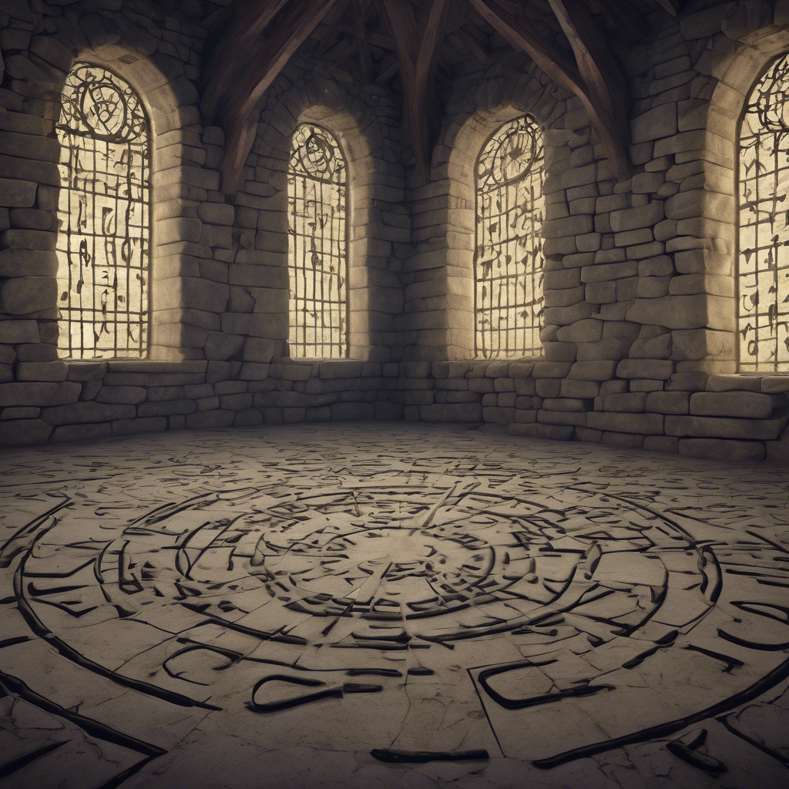

Körbejársz, és alaposan megvizsgálod a hatalmas termet. A falakon rúnák pulzálnak, és észreveszed, hogy több helyen apró csapdák rejtőznek a padló kövei között. Egy rossz lépés halálos lenne. Óvatosan, figyelve a lábad elé, átlépegetsz a veszélyes szakaszokon, és megtisztítod a területet egy régi varázsigével, amit egy könyvben olvastál. A koronát most már semmi nem védi – lebegve, békésen vár rád. Mikor megérinted, semmi nem történik – csak kellemes meleg árad szét benned, mintha maga az ősi lángmágus áldását adnád át neked.
Menj a 12-as bekezdésre.